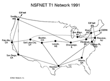
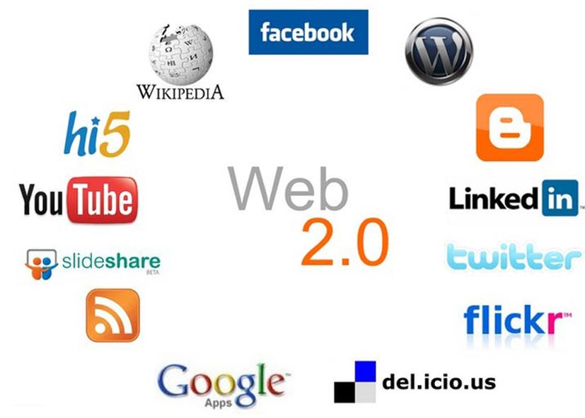

Timeline
1969
now

ARPA NET
It connected 4 computers with wires
first wide-area packet-switched network

NSF NET
used wire and satellite together
it was a global network
record keeping system

DNS server
more organized than before by using domain name like .com
WWW
Barners-Lee made it
used hypertext
reading only
public

Web 2
read+post
centralized
Web 3
decentralized
crypto